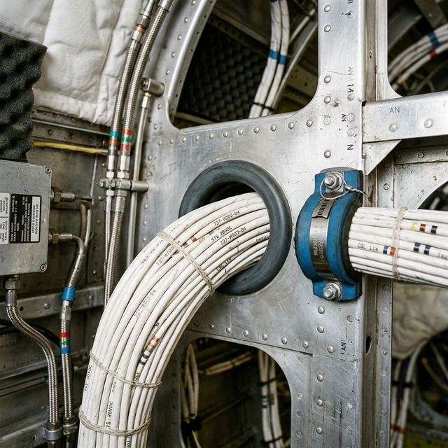

Routing & protection
Module Objectives
- Identify the primary environmental and structural hazards that dictate wire routing paths.
- Explain the physical requirement of installing strain relief near connector bulkheads.
- Describe the mandatory protection procedures for wire bundles routed near moving flight controls.
Why Does This Matter?

During an extensive 100-hour inspection, a sharp-eyed technician spots a sleek new wire bundle resting gently against an elevator control cable sector bracket in the aft tailcone. Looking closely, the constant motion of the control surface has sawed cleanly through the wire's outer Teflon jacket, and the raw copper conductor is visibly exposed, mere millimeters from shorting out against the steel bracket. One more aggressive flight could have resulted in a dead short circuit immediately adjacent to a primary moving flight control. Meticulous wire routing is not a cosmetic exercise — it is a life-saving structural discipline.
What You Need To Know
Routing Priority — Separation from Hazards
The absolute highest priority when laying out a wire routing path is physically maintaining maximum separation from four primary hazards:
- 1. Heat Sources: Exhaust stacks, environmental heating ducts, and high-temp engine blocks. (Radiant heat destroys insulation integrity).
- 2. Moving Parts: Aileron, elevator, and rudder control cables, spinning actuator screws, and rotating propeller shafts.
- 3. Sharp Edges: Exposed structural ribs, lightning-hole raw edges, bracket corners, and protruding bolt threads.
- 4. Fluid Lines: Fuel lines, high-pressure hydraulic manifolds, oxygen lines, and oil returns. (Wiring must always be routed physically *above* fluid lines to prevent dripping flammable fluids from tracking down the wire harness).
The Necessity of Strain Relief
Strain relief is the practice of solidly anchoring the wire bundle immediately before it enters a physical connector or a delicate component.
- It absorbs the massive mechanical tension generated by airframe flex and G-forces.
- It prevents the total weight of the heavy bundle from pulling directly on the fragile soldered joints or micro-crimped pins inside the connector.
- Without it, vibration will rapidly fatigue the terminations, causing intermittent system dropouts.
Routing Near Flight Controls (Critical Danger)
If engineering dictates a wire bundle must be routed near moving flight control cables or mechanical linkages, absolute restrictions apply:
- The bundle must be encased in approved protective conduit or heavy-duty spiral wrap.
- The bundle must possess sufficient mechanical slack ensuring that at absolute zero point during the control's maximum deflection geometry can the cable pull tight, bind the mechanism, or restrict movement.
- Wires must never be zip-tied or clamped directly to moving flight control cables under any circumstance.
Chafed Wire Bundle — Mandatory Procedure
When inspecting a routing path and discovering a chafed bundle:
- 1. Immediate Action: Remove all power from the affected circuits. Tag out the breakers.
- 2. Investigation: Assess the full, 360-degree extent of the damage. Disassemble the bundle if necessary to inspect internal wires.
- 3. Rectification: Follow uncompromising repair procedures dictated by the manufacturer's maintenance manual or AC 43.13-1B. (If the copper conductor is nicked, the wire must be cut and repaired; tape over exposed copper is illegal).
- 4. Root Cause: Address the routing flaw that caused the chafe before signing off the repair. Add an Adel clamp or reroute.
Routing Conflicts
If a dense wire bundle simply does not fit through the designated engineering routing path hole:
- Do NOT force or yank it. Heavy pulling aggressively stretches the conductors and shears the insulation.
- Do NOT trim out structural material to make the hole bigger without engineering approval.
- Consult the installation engineering manual to request an approved alternate deviation route.
System Visualization
graph TD
A[Design Wire Routing Path] --> B{Does harness cross a fluid line?}
B -->|Yes| C[Route harness ABOVE fluid line]
B -->|No| D[Check next hazard]
C --> D
D --> E{Is harness near an aluminum bulkhead?}
E -->|Yes| F[Install rubber edge grommet hole]
E -->|No| G[Check next hazard]
F --> G
G --> H{Does harness pass Flight Control mechanism?}
H -->|Yes| I[Install physical conduit barrier & verify slack]
I --> J[Anchor with Adel Clamp 2 inches before connector]
J --> K[Perfectly Strain-Relieved, Hazard-Isolated Routing]
style K fill:#166534,stroke:#14532d,stroke-width:2px,color:#fff
On The Job
During every single installation, inspection, or panel closure, physically run your bare hand gently along the wire harness. You will feel for proximity to sharp structural edges, engine heat sources, or moving mechanical parts far better than you can see them deep in the airframe. Verify that every Adel clamp is torqued and that the routing path is completely clear of the flight control sweep envelope. A five-minute physical routing verification prevents catastrophic in-flight electrical fires.
Reference Terms
Strain Relief
A strain relief is a clamping or support device attached near a connector that absorbs mechanical tension on the wire, preventing that tension from being transmitted to the connector pins or solder joints.
Wire Routing Priority
The most important wire routing consideration is separation from: heat sources (exhaust, heating ducts), moving parts (cables, actuators), sharp edges (structural members, brackets), and fluid lines (fuel, hydraulic, oil) — all of which can damage insulation and cause failures.
Wire Bundle Routing Conflict
When a wire bundle does not fit a designated routing path, the correct action is to consult the installation manual for an approved alternate route — never force the bundle (damages insulation) or trim/omit wires (alters the certified design).
Chafed Wire Bundle — Correct Procedure
When a wire bundle is found chafed by a metal edge: (1) remove all power from affected circuits, (2) assess the full extent of damage (examine the entire contact area, not just the visible portion), (3) follow only approved repair procedures from the applicable maintenance manual or FAA AC 43.13.
Wire Routing Near Flight Controls
Wire bundles routed near flight control cables or linkages must be protected with approved conduit or spiral wrap AND have sufficient slack to prevent the bundle from being pulled taut or restricting control movement at any control surface position.
Nicked Coaxial Center Conductor
A nicked coaxial cable center conductor must result in complete cable replacement — not repair. A nick changes the local impedance (causing signal reflection), reduces mechanical strength (causing fatigue failure), and cannot be reliably repaired to original specification.
Chafing
The aggressive, friction-based destruction of wire insulation caused by vibration-induced contact with a sharp edge or rough structural surface.
Bulkhead Grommet
A rubber or nylon protective ring inserted into a hole cut in sheet metal, preventing the knife-like edge from slicing through wires routed through it.
Assessment Check
Route harnesses completely clear of heat, moving parts, sharp edges, and highly flammable fluid lines — protect bundles intensely near flight controls with conduit, and immediately anchor bundles preceding all connectors to provide absolute strain relief. --- ---